| Jury Compromise |
In Frobnia, a far-away country, the verdicts in court trials are determined by a jury consisting of members of the general public. Every time a trial is set to begin, a jury has to be selected, which is done as follows. First, several people are drawn randomly from the public. For each person in this pool, defence and prosecution assign a grade from 0 to 20 indicating their preference for this person. 0 means total dislike, 20 on the other hand means that this person is considered ideally suited for the jury.
Based on the grades of the two parties, the judge selects the jury. In order to ensure a fair trial, the tendencies of the jury to favour either defence or prosecution should be as balanced as possible. The jury therefore has to be chosen in a way that is satisfactory to both parties.
We will now make this more precise: given a pool of n potential jurors and two values 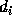 (the defence's value) and 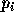 (the prosecution's value) for each potential juror i, you are to select a jury of m persons. If is a subset of { 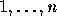 } with m elements, then 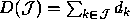 and 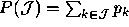 are the total values of this jury for defence and prosecution.
For an optimal jury , the value 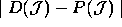 must be minimal. If there are several jurys with minimal , one which maximizes 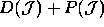 should be selected since the jury should be as ideal as possible for both parties.
You are to write a program that implements this jury selection process and chooses an optimal jury given a set of candidates.
Note: If your solution is based on an inefficient algorithm, it may not execute in the allotted time.
The input file contains several jury selection rounds. Each round starts with a line containing two integers n and m. n is the number of candidates and m the number of jury members. These values will satisfy 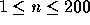 , 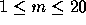 and of course 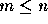 . The following n lines contain the two integers and for 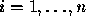 . A blank line separates each round from the next.
The file ends with a round that has n = m = 0.
For each round output a line containing the number of the jury selection round (`Jury #1', `Jury #2', etc.).
On the next line print the values 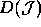 and 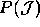 of your jury as shown below and on another line print the numbers of the m chosen candidates in ascending order. Output a blank before each individual candidate number.
Output an empty line after each test case.
4 2 1 2 2 3 4 1 6 2 0 0
Jury #1 Best jury has value 6 for prosecution and value 4 for defence: 2 3